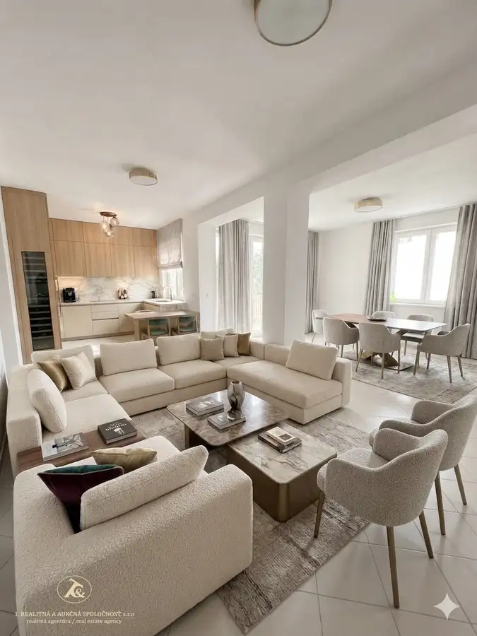
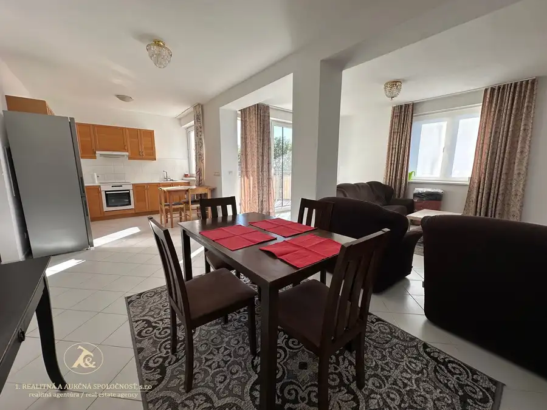
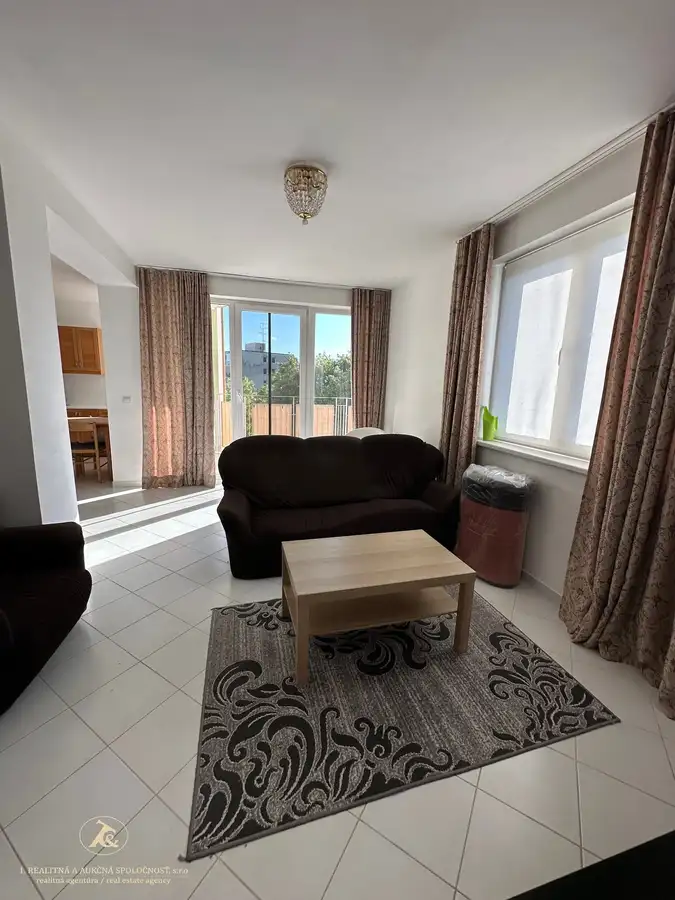
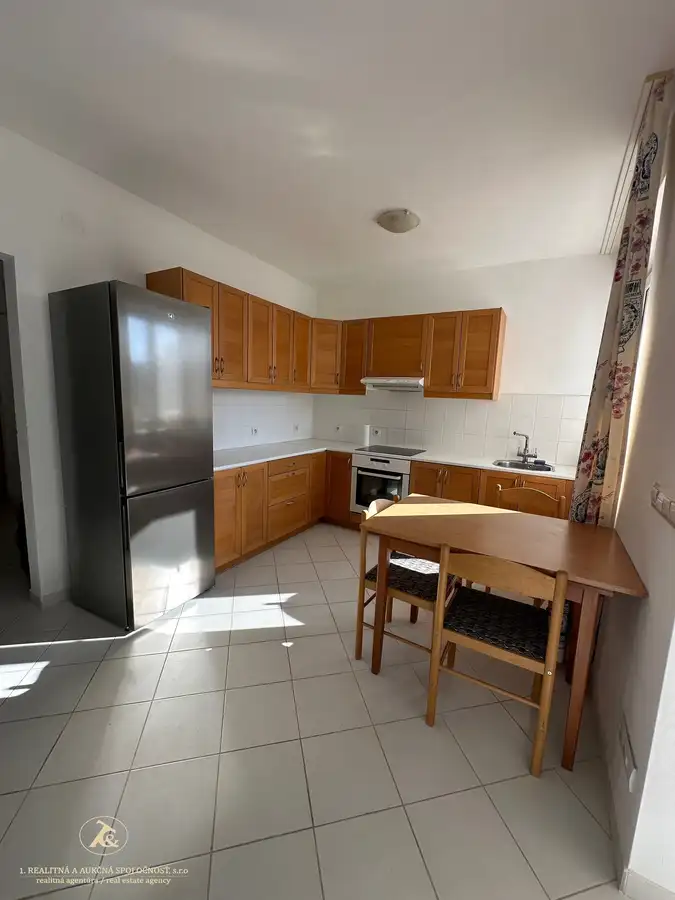
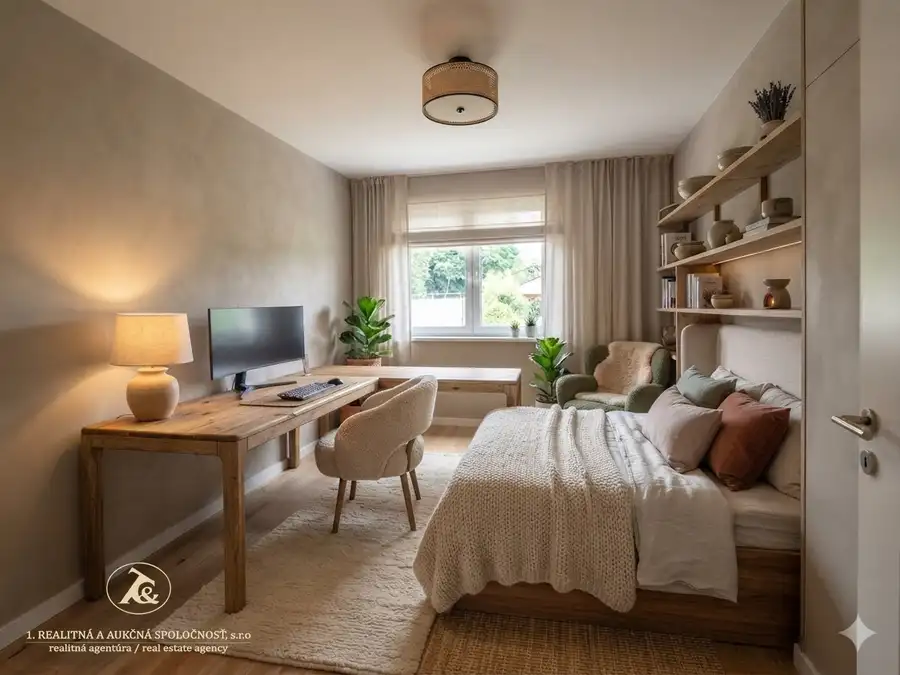
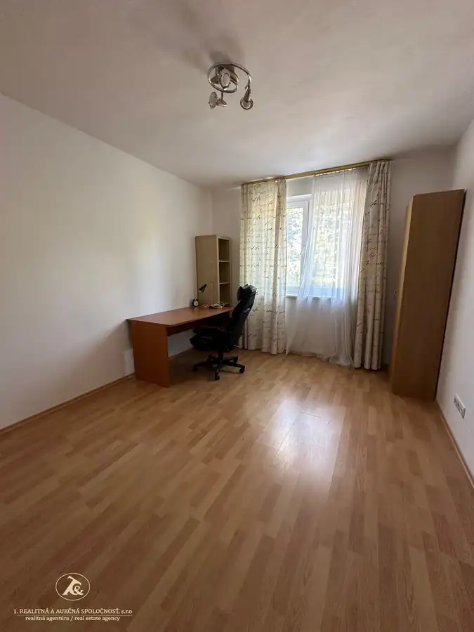
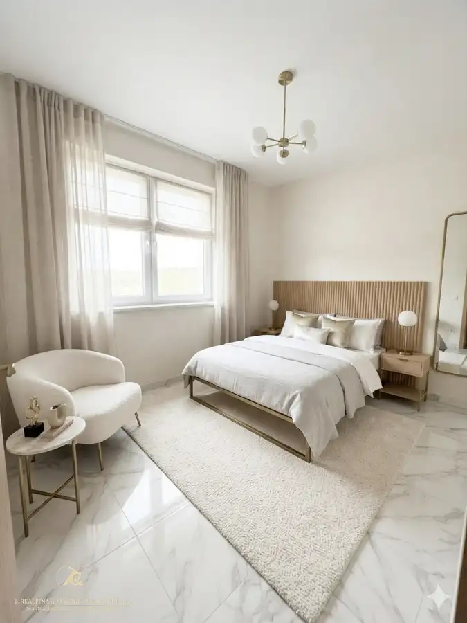
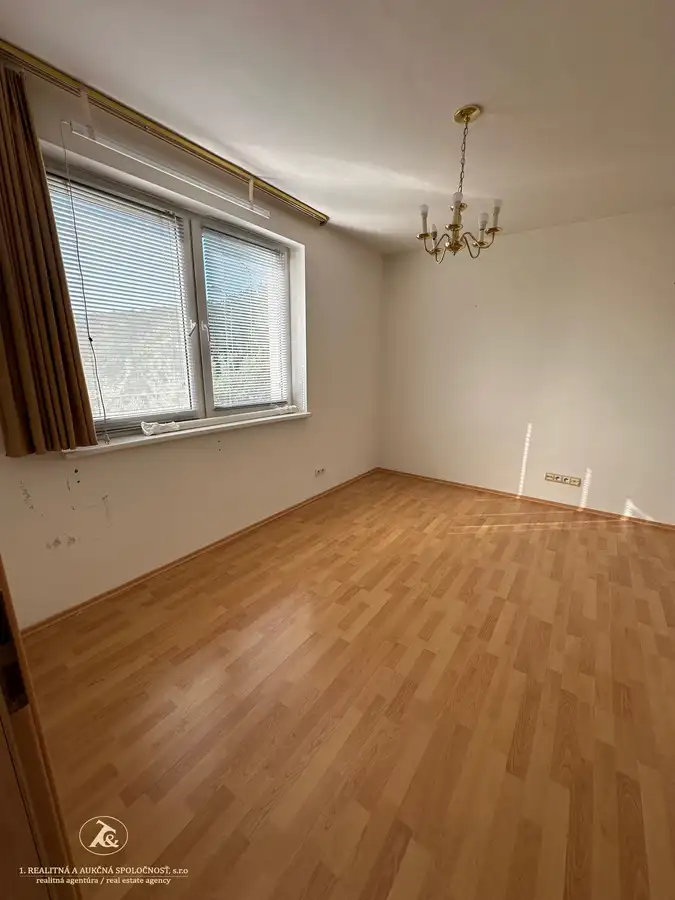

Veľkorysý 4-izbový byt na Kramároch – 100 m², loggia, zeleň a parkovanie
Nové Mesto, Bratislava








- Dispozícia4-izbový
- Plocha100.55 m²
- Poschodie2. z 4
- StavNovostavba
- VlastníctvoOsobné
O nehnuteľnosti
Priestor pre celú rodinu. Pokojné bývanie v zeleni. A Bratislava stále na dosah.Na ulici Na Revíne v obľúbenej rezidenčnej lokalite Kramáre ponúkame na predaj veľkorysý 4-izbový byt s výmerou 100,55 m², loggiou 6,35 m² a parkovacím státím v suteréne bytového domu.Ak hľadáte bývanie, ktoré vám poskytne dostatok priestoru, súkromia a možnosť vytvoriť si interiér presne podľa vlastného vkusu, táto nehnuteľnosť ponúka veľmi dobrý základ.PRIESTOR, KTORÝ FUNGUJE - Byt sa nachádza na 2. poschodí zo 4 v tehlovom bytovom dome s výťahom a vďaka trojstrannej orientácii je príjemne presvetlený počas celého dňa.Jeho dispozícia ponúka:obývaciu izbu s výmerou 31,5 m² a priamym vstupom na loggiu,6,35 m² veľkú loggiu orientovanú do zelene,kuchyňu plynulo prepojenú s jedálenskou a obývacou časťou,tri samostatné spálne,kúpeľňu s vaňou, bidetom a WC,samostatné WC,praktickú komoru/šatník,pivničnú kobku.Veľké okná a výhľady do okolitej zelene vytvárajú v byte príjemnú atmosféru a zároveň poskytujú dostatok prirodzeného svetla.BÝVANIE, KTORÉ SI VYTVORÍTE PODĽA SEBA - Veľkou výhodou bytu je jeho veľkorysá výmera a dobre využiteľná dispozícia. Nový majiteľ tak získava priestor, ktorý si môže modernizovať a zariadiť podľa vlastného vkusu a potrieb. Či už hľadáte pohodlné rodinné bývanie, potrebujete tri samostatné izby alebo chcete mať dostatok priestoru na prácu z domu, detskú izbu či hosťovskú izbu, 100 m² ponúka slobodu bez kompromisov.KRAMÁRE – POKOJ, ZELEŇ A MESTO NA DOSAH - Kramáre sú vyhľadávanou rezidenčnou lokalitou práve pre kombináciu pokojného prostredia, množstva zelene a dobrej dostupnosti do centra Bratislavy. V okolí sa nachádzajú školy a škôlky vrátane medzinárodnej nemeckej školy, detské ihriská, obchody, služby, možnosti športu aj oddychu v prírode. Je to miesto, kde môžete mať komfort mesta a zároveň pocit, že ste od každodenného ruchu o niečo ďalej.PARKOVANIE PRIAMO V DOME - Súčasťou ponuky je parkovacie státie v suteréne bytového domu, vďaka ktorému máte parkovanie priamo v dome. K bytu patrí aj pivničná kobka.CENA: 484.000 € VRÁTANE PARKOVACIEHO STÁTIA100,55 m² byt | 6,35 m² loggia | 3 samostatné spálne | 31,5 m² obývacia izba | trojstranná orientácia | parkovanie v dome | pivničná kobkaByt je voľný podľa dohody.PRÍĎTE SI HO POZREŤ - Pri tomto byte je osobná obhliadka obzvlášť dôležitá. Až na mieste naplno oceníte veľkorysosť priestoru, množstvo prirodzeného svetla, výhľady do zelene a možnosti, ktoré tento byt ponúka.Ak hľadáte veľký rodinný byt na Kramároch s vlastným parkovaním a priestorom na vytvorenie bývania podľa vlastných predstáv, radi vám ho osobne predstavíme.Kontakt:Andrea Bielik, 📞 +421 903 205 802, ✉️ andrea.bielik@realitna.skKompletný právny servis a profesionálne zastúpenie počas celého procesu kúpy sú samozrejmosťou.
Parametre
- Cellar area
- 3 m²
- Cena vrátane energií
- Nie
- Druh
- 4 izbový byt
- Dátum zverejnenia
- 24. 09. 2026
- Plocha lodžie
- 6.35 m²
- Podlažie
- 2
- Počet izieb / miestností
- 4
- Počet lodžií
- 1
- Počet nadzemných podlaží
- 4
- Počet pivníc
- 1
- Prechodová izba
- Áno
- Rok kolaudácie
- 2014
- Rok výstavby
- 2012
- Stav nehnuteľnosti
- Novostavba
- Typ
- Predaj
- Typ konštrukcie
- Tehlová
- Umiestnenie
- Ďalšie nadzemné podlažie
- Vlastníctvo
- Osobné
- Vybavenie
- Lodžia, Garáž, Pivnica, Sklad
- Vykurovanie
- Ústredné
- Zariadenie
- Zariadené kompletne
- Úžitková plocha
- 100.55 m²
Kde to je


Mohlo by Vás zaujímať
 BytNové
670 000 €Dom, ktorý si nekupujete pre to, aký je dnes. Kupujete si ho pre to, kde je – Patrónka, ul. Západný rad, Bratislava - Staré Mesto
Staré Mesto, Bratislava
175 m²
BytNové
670 000 €Dom, ktorý si nekupujete pre to, aký je dnes. Kupujete si ho pre to, kde je – Patrónka, ul. Západný rad, Bratislava - Staré Mesto
Staré Mesto, Bratislava
175 m²
 Komerčné priestoryNové
1 500 000 €KÚPTE HOTOVÝ BIZNIS, NIE PROJEKT NA PAPIERI Penzión Tematín pri Piešťanoch – etablovaná značka, fungujúca prevádzka a priestor na ďalší rast
Moravany nad Váhom
1260 m²
Komerčné priestoryNové
1 500 000 €KÚPTE HOTOVÝ BIZNIS, NIE PROJEKT NA PAPIERI Penzión Tematín pri Piešťanoch – etablovaná značka, fungujúca prevádzka a priestor na ďalší rast
Moravany nad Váhom
1260 m²
 PozemokNové
Cena na vyžádáníPredaj atraktívneho pozemku o výmere 745 m2 s neobmedzeným výhľadom v Rači - Popolná ul.
Rača, Bratislava
745 m²
PozemokNové
Cena na vyžádáníPredaj atraktívneho pozemku o výmere 745 m2 s neobmedzeným výhľadom v Rači - Popolná ul.
Rača, Bratislava
745 m²